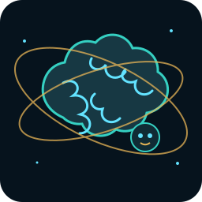

✦Mega BrainONLINE LOCALNúcleo acordado. Eu leio o workspace, seleciono skills e modelo por tarefa, altero código e fecho o ciclo com validação. Qual sistema vamos melhorar?Mapear workspaceRevisar código